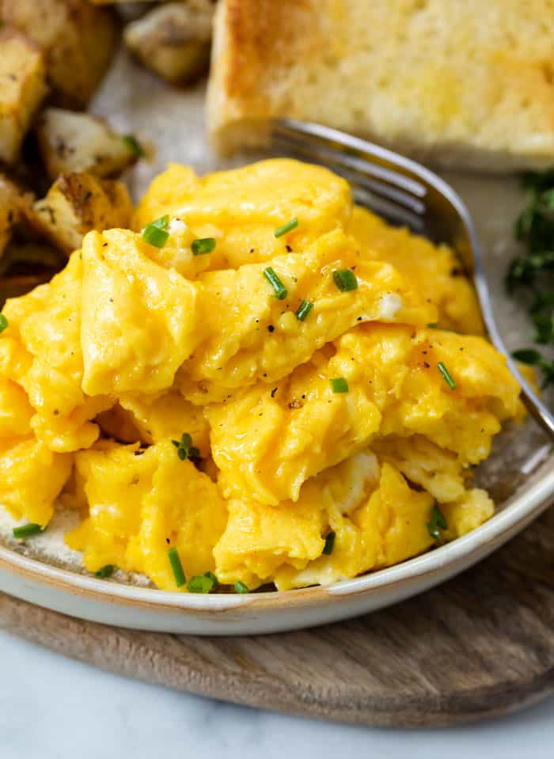

Scrambled Eggs

Description
These scrambled egg are so fluffy and decadent that it will feel like eating a cloud. Enjoy these by themselves or enjoy alongside some crispy skillet potatoes or hashbrowns
Ingredients
2 Large Eggs
2 Tablespoons salted butter
.25 cup cheddar cheese, shredded
Chives, to garnish
Directions
1. Crack the eggs into the bowl and whisk vigorously for one minute
2. Melt the butter over low low heat in an 8-inch non stick pan
3. Remove the pan from the heat and add the eggs.
4. Whisk the top of the eggs vigorously again, try not to touch the bottom of the pan
5. Return the pan to the heat. Continue to whisk the eggs until the top is very foamy. Sprinkle the cheese on top and whisk to incorporate
6. Let the bottom of the eggs set for 5-7 seconds. Run a silicone spatula from the edge of the pan into the midle. Tilt the pan so that the uncooked eggs can slide onto the surface area that you just created with the satula.
7. Continue to slide the cooked eggs into the middle with the spatula andd rotate to allow uncooked eggs to hit the surface pan.
8. After about 30 seconds or so, the eggs will be most set. Remove them from the heat. The heat from the pan will finish cooking them. Gently fold the eggs so that any remaining wet spots touch the pan and finish setting.
9. Create "slices" with the spatula to create smaller bites that will resemble a scramble.
10. Season with salt/pepper(and chives), and transfer to a serving plate. Serve immediately!